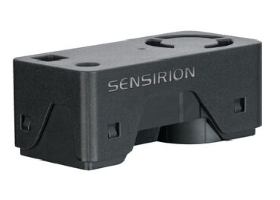
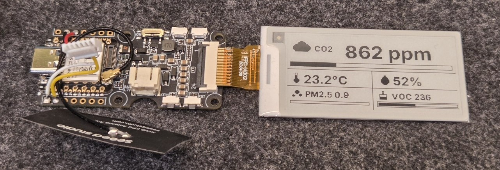
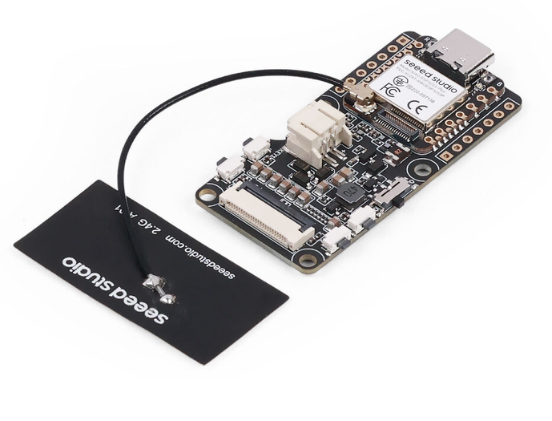
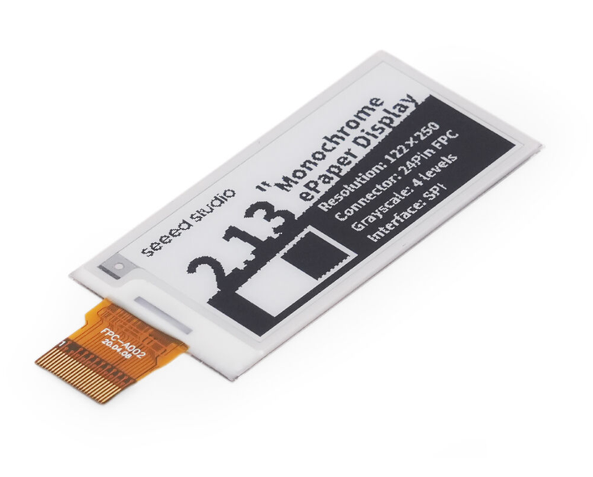
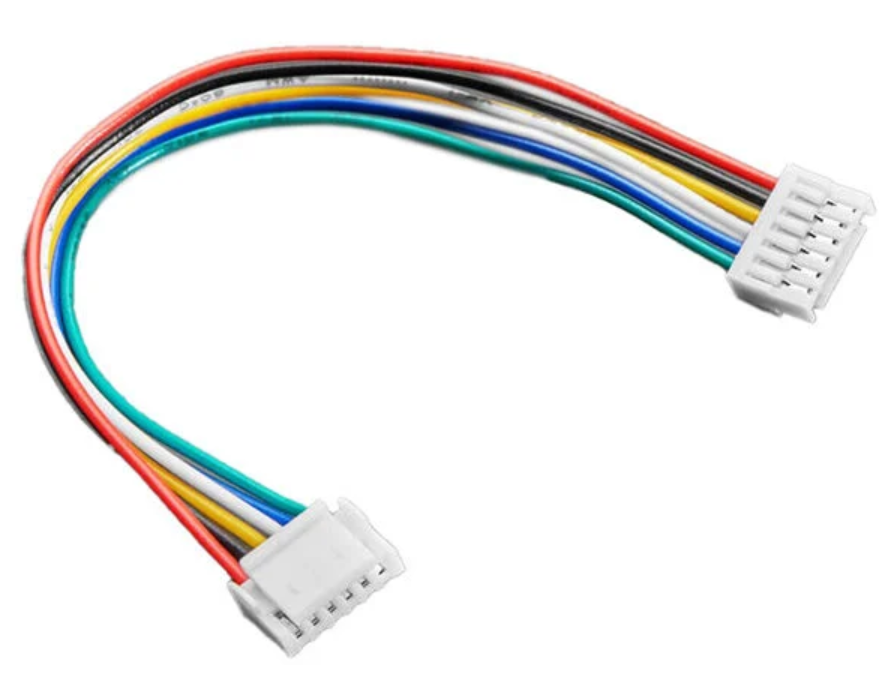
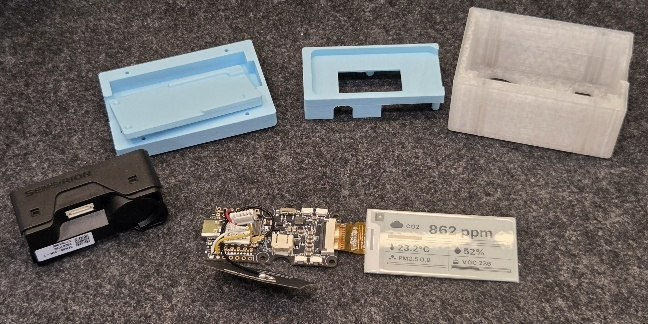
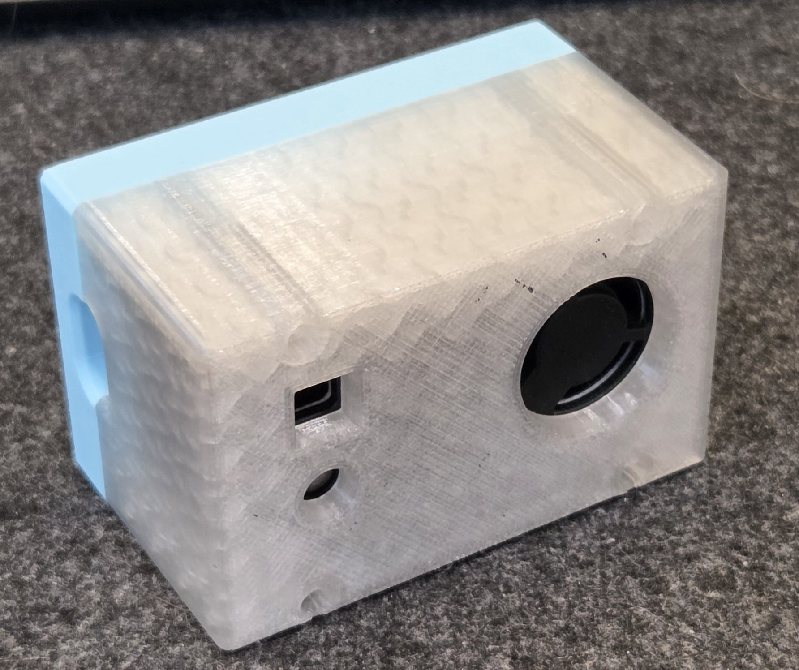

01 / Sensor
Sensirion SEN66
The air quality sensor at the heart of the monitor.
- Part number
- SEN66-SIN-T
- Ordering code
- 1649-SEN66-SIN-T-ND
03 / ESPHome / Electronics / 3D printing
A closer look at the air around me.
Built for ESPHome, with a case of its own.
I built this air quality monitor for ESPHome and designed a 3D-printed enclosure to bring the sensor, controller, and display together.

CO₂ takes the largest space, with temperature, humidity, PM2.5, and VOC below it. Small icons and horizontal bars keep the layout easy to scan.

The four electronic components used in this build. The printable enclosure files and ESPHome configuration are available in Project files.

01 / Sensor
The air quality sensor at the heart of the monitor.

02 / Controller
The ESP32-S3 board running ESPHome and driving the display.

03 / Screen
The eInk screen used for the five-reading layout.

04 / Connection
The cable used for the sensor connection.
The parts layout shows the sensor module, controller and display, front frame, internal support, and outer shell.

The sensor is a Sensirion SEN66 (SEN66-SIN-T). It sits above the controller on a separate printed support, connected by a short wiring harness.
A Seeed Studio controller with a USB-C connector sits behind the display.
The front frame holds the display assembly, while the raised internal support creates space for the electronics. The outer shell includes openings aligned with the sensor.

The configuration uses the XIAO ESP32-S3 board with the ESP-IDF framework, a Sensirion SEN66 sensor, and a 2.13-inch monochrome e-paper screen. The screen is configured in landscape orientation using the ESPHome waveshare_epaper driver and 2.13inv3 model setting.
CO₂, PM1.0, PM2.5, PM4.0, PM10, VOC index, NOx index, and corrected temperature and humidity are exposed through the encrypted API. Sensor readings update every 10 seconds; the screen refreshes every 30 seconds.
Temperature and humidity calibration offsets, plus CO₂, VOC, and PM2.5 display thresholds, can be adjusted without reflashing.
The CO₂ headline inverts when its threshold is reached. The bars receive an extra outline at their thresholds.
Download the Yaml and 3mf files here